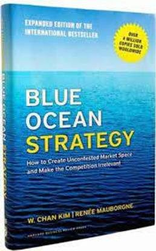

Why Did Tupperware Fail?
The Party Ended After 78 Years
📜 What Happened
Tupperware didn't sell containers; it sold the Tupperware Party — a 1950s social-selling revolution that empowered a generation of women entrepreneurs. But the model WAS the moat, and the moat expired: parties died with changing social lives, the company barely entered retail or e-commerce until 2022 (Target, decades too late), and cheaper competitors filled Amazon. Sales fell for years; debt piled; in September 2024 the icon filed for bankruptcy — still famous, still in every kitchen, still unable to sell you anything the way you actually buy.
☠️ The Fatal Mistake
Mistaking a distribution channel (parties) for the brand's essence — and protecting the channel long after customers had left it.
🧠 The Lesson (Free for You)
Your sales channel is a rental, not an identity. When how people buy changes, loyalty to your old channel is disloyalty to your own survival.
📕 The Antidote Book

Most companies compete in RED OCEANS: existing markets with known rules, where rivals fight over shrinking profits until the water turns bloody. Blue oceans are uncontested spaces created by VALUE INNOVATION — the…
📖 OPEN THE FULL INTERACTIVE BREAKDOWN →Searchable, filterable, free forever — they paid billions; your lesson is free.